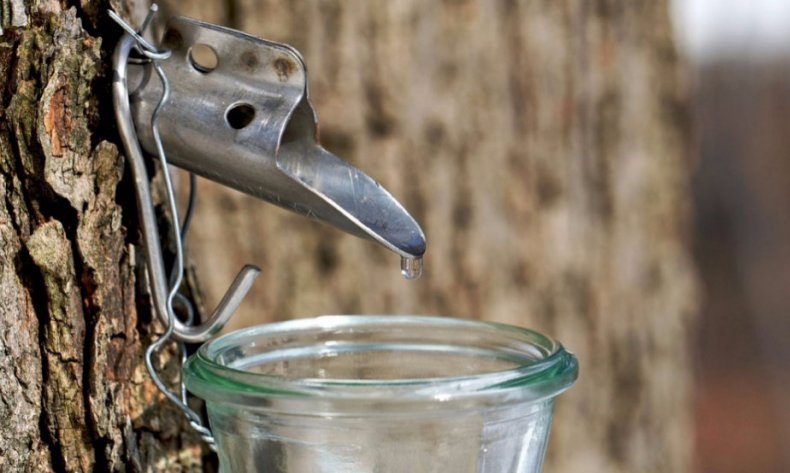
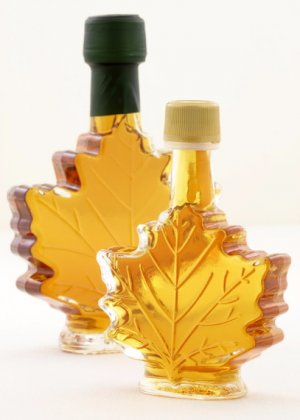

Что такое кленовый сок .


Кленовый сок приравнивается по своим полезным свойствам с таким известным напитком, как березовый. Древесную жидкость люди научились добывать достаточно давно: надломив всего лишь ветвь или выполнив надрез в капельный период, можно получить требуемый результат - вытекания наружу сладких «слез», что производится под воздействием давления корневой системы дерева.
Кленовый сок
Древесной сок добывается и используется на государственном уровне в Канаде и других североамериканских странах, где напиток превратился в любимое блюдо, а на флаге Канады имеется даже кленовый лист. В странах, образовавшихся после распада Советского Союза, жидкость добывается в меньших объемах, поскольку традиционно здесь применяется березовица.
Клен имеет большое количество разновидностей, однако добыча сока может осуществляться только самыми «сладкими» сортами. Размеры деревьев являются достаточно большими: они имеют метровый диаметр и тридцатиметровую среднюю высоту.
Человечество научилось получать из клена не только сок, но и сироп. Для его изготовления производится выпаривание воды из древесной жидкости, при этом происходит загустевание сладкого продукта и превращение его в тягучую массу с отличными вкусовыми качествами.
Можно ли употреблять кленовый сок?
Перед употреблением чашки напитка из клена следует убедиться в том, то он «годен к употреблению». Необходимо помнить, что срок хранения кленовой жидкости не превышает трех дней, после чего она начинает горкнуть и портиться, поэтому пить сок из клена можно только в свежевыжатом виде, так сказать «прямо из древесины».
Нормальное функционирование человеческого организма требует большого количества различных витаминов и микроэлементов, которые как раз и присутствуют в напитке из клена. «Урожай» собирается в ранний весенний период, когда большинство людей, проживающих на территории умеренно климата, страдают витаминной недостаточностью различного уровня тяжести – сок способствует приданию жизненной энергии, укреплению иммунной системы, улучшению общего состояния и внешних характеристик.
Польза и вред кленового сока
Прежде всего, этот сок имеет настолько легкую усвояемость, что он может употребляться вместо воды. Однако далеко не все люди могут даже в небольших объемах употреблять растительную жидкость с натуральными свойствами. Далее постараемся подробно рассмотреть состав кленового напитка, полезные и вредные свойства, кому показан, а кому противопоказан данный напиток.
Таблица: состав и позитивное влияние на человеческий организм.
| Компоненты | Польза |
| Вода |
Составляет 90 процентов содержимого сока. Употребление данного продукта, характеризующегося легкой сладковатостью и вкусовыми качествами, поможет справляться с жаждой. Легкое усвоение организмом позволяет быстротечно выводить из него токсические вещества.
|
| Сахароза |
Сахар является энергетическим источником. Также данный продукт способствует улучшению функции печени, стимулированию образования «гормона радости», серотонина, активизации кровообращения в спинном и головном мозге.
|
| Олигосахариды |
Оказывают положительное воздействие на формирование кишечной микрофлоры, благодаря чему увеличивается количество лакто- и бифидобактерий.
|
| Витамины – E, PP, B, C |
Способствуют замедлению процессов старения, улучшению регенерации тканей, снижению уровня холестерина в кровяной системе, нормализации функционирования ЖКТ.
|
| Минералы |
Минеральные элементы положительно влияют на деятельность сердечно-сосудистой системы (способствуют уменьшению вязкости крови, предупреждают образование тромбов, осуществляют регулирования процессом обмена веществ в миокарде, обеспечивают проведение сердечного импульса), а также скелетного аппарата (способствуют повышению плотности костей, улучшению крепости зубов и ногтей и т.д.).
|
| Органические кислоты | Очищение организма, положительное воздействие на функционирование желудка, улучшение зрения, а также проявление противоопухолевых характеристик. |
| Жирные кислоты | Снижение давления, способствование кровяному разжижению, позитивное влияние на деятельность головного мозга, ускорение процессом мышления. |
| Глюкоза | Поддержка функции дыхания, сокращения мышечной массы (в т.ч. сердечной), регулирование температуры тела. Глюкоза представляет собой энергетический источник, также она питает все органы и ткани человеческого организма. |
| Каротиноиды | Улучшение работы сердца, замедление дегенерации желтого пятна сетчатки, стимулирование иммунной системы. Ученые доказали, что благодаря регулярному потреблению продуктов питания, состоящих из каротиноидов, развитие опухолевых образований желудка, легких и простаты может быть снижено на 45 процентов. |
| Декстроза | Высокоскоростное усвоение организмом и стимулирование выброса инсулинового вещества, что приводит к быстрому поступлению энергии в организм. Это способствует повышению уровня выносливости, работоспособности, приданию жизненных сил, улучшению общего самочувствия. |
Несмотря на большое количество положительных свойств, которыми характеризуется кленовый сок, он имеет также и определенные противопоказания:
1. Сахар, входящий в него, не рекомендуется людям, которые страдают сахарным диабетом. Следовательно, подъем уровня кровяной глюкозы может быть спровоцирован даже незначительным употреблением напитка.
2. Напиток не рекомендуется к употреблению людям, борющимся с лишним весом посредством жиросжигающей диеты. Количество килокалорий в соке сложно оценить, ведь это зависит от различных факторов: разновидность клена (сорта бывают «сладкими» и «не сладкими»), место его произрастания (при учете уровня влажности). Варьирование пищевой ценности может производиться в пределах от 12 до 120 кКал.
3. Продукт иногда может вызывать аллергию. При первом употреблении человеком кленового сока, ему нужно сначала отпить несколько глотков и в течение тридцати минут оценивать общее состояние своего организма.
4. Кленовый сок противопоказан детям, которым не исполнилось три года. Ребенок возрастом от 3 до 5 лет может употреблять напиток в объеме не более 100 миллилитров в день.
Необходимо также учитывать, что кленовый напиток имеет мочегонное действие. Употребление древесного продукта рекомендуется в небольших дозах при наличии проблем, связанных с функционированием мочевыделительной системы.
Сбор и хранение кленового сокаКленовый сок собирают в первой половине весны в зависимости от условий погоды. Отличным временем для добычи можно назвать период «просыпания» почек при колебании среднесуточной температуры в пределах от 0 до 4 градусов. Если ночью произошло резкое снижение температуры, не нужно откладывать сбор на «более успешные времена», поскольку древесная жидкость этого не боится.
Несмотря на относительную простоту процесса, необходимо проводить все в соответствии с определенными правилами, опасаясь принести вред дереву. Сначала нужно на 30-35-сантиметровом расстоянии просверлить маленькую дырочку, диаметром 1,5 сантиметров. Затем в образовавшуюся выемку произвести вставку трубочки, и специальные емкости под нее для стекания жидкости.
Финишным этапом сбора является «лечение» дерева. «Вылечить» дерево можно произведя зачистку «раны» с помощью дезинфицирующего раствора (к примеру, 5-процентным раствором купороса из меди) и наложив сверху глиняную повязку.
Консервация данного продукта не принята, несмотря на достаточную простоту и эффективность этого способа заготовки. Как считают истинные ценители кленового сока, сохранить напиток наилучшим образом можно с помощью окислительного процесса. Для этого производится выливание продукта в эмалированную емкость, после чего он закрывается крышкой и устанавливается в подвал или другое прохладное помещение примерно на 7 дней. Результатом химических реакций, происходящих при контакте с воздухом, становится потеря напитком сладковатого привкуса и превращение его в кислый продукт.
«Заготовительный» процесс можно считать завершенным после того, как на дне емкости образовалась определенная взвесь, а сам напиток превратился в мутный. Далее производится разлитие продукта по бутылям и закрытие его обычными крышками из пластмассы. В подобном состоянии хранение сока может осуществляться до 4 лет, без утраты им оригинальных полезных свойств.
Рецепты с кленовым соком
Древесная жидкость употребляется в чистом виде, а также используется в процессе приготовления разнообразных блюд. Ниже приведем самые эффективные рецепты:
1) «Сладкая» морковка. Порезав кубиками восемь морковок, нужно положить их в кастрюлю. Затем добавить туда заранее растопленное растительное масло (3 ст.л.), стакан кленового напитка, немного имбиря (0,5 ч.л.). Протушить до готовности на медленном огне.
2) Бедра курицы с хорошими вкусовыми качествами. Взяв 500-600 гр. бедер, нужно добавить к ним 200 гр. сливок, порезанного полукольцами лука, душистого перца, соли и кленового напитка (100 миллилитров). После перемешивания, дать настояться в течение получаса. Далее выложить на противень, поставить в духовку, выпекать в течение 45 минут.
3) Вкусное запекание яблок (6 штук). Для этого нужно соединить 6 ст.л. изюма и дробленных грецких орехов, а также 0,5 ч.л. молотой корицы. Далее вырезается из яблок сердцевина, которая заполняется полученной смесью, размещается на противень и поливается кленовым соком. Выпекание производится на протяжении получасового периода при температуре 170 °C.
Натуральный состав древесных «слез» сделал этот напиток очень популярным. Употребляя кленовый напиток (при отсутствии противопоказаний), можно гарантировать определенную пользу своему организму, поэтому нужно обязательно попробовать вкус этого продукта.